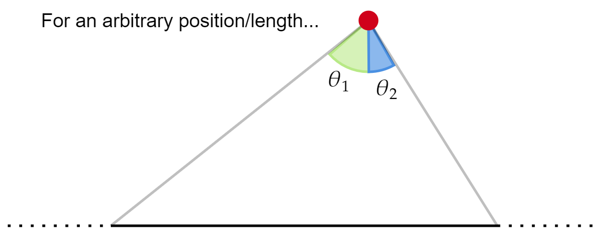
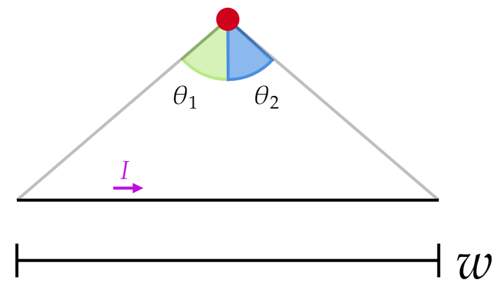
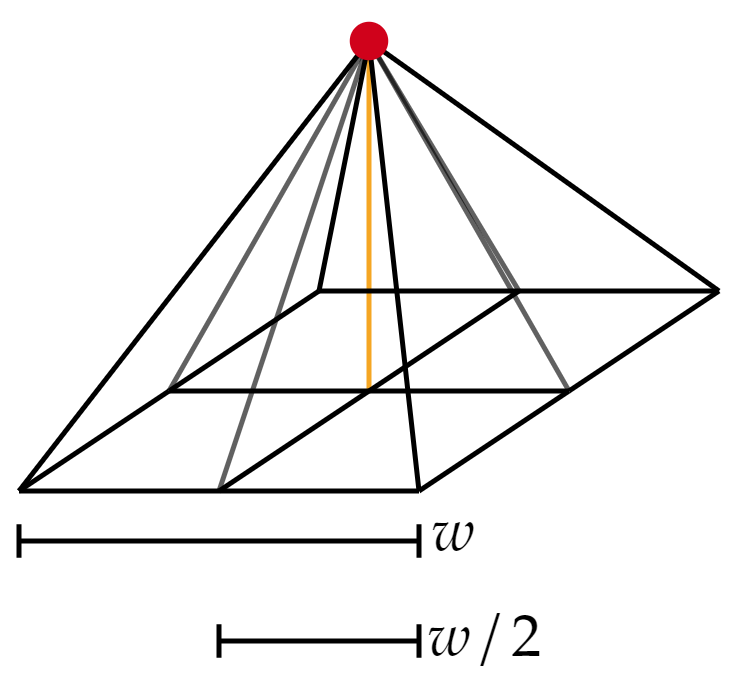
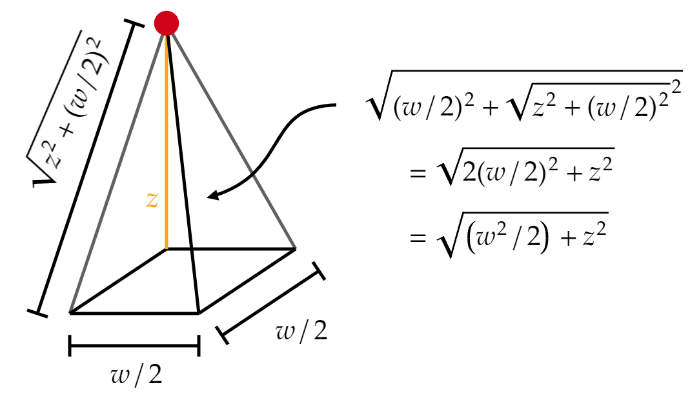

Find the exact magnetic field a distance $z $ above the center of a square loop of side $w $, carrying a current $I $. Verify that it reduces to the field of a dipole, with the appropriate dipole moment, when $z>>w $.
This is, of course, a problem about the Biot-Savart law.
A square loop is just 4 finite line segments. The field due to the square loop will be the same as the sum of the individual fields from each line segment.
We know the field of a line segment a distance $s $ from us (see Example 5.5 on page 223):
\[B=\frac{\mu _0 I}{4\pi s} \left( \sin \theta _2 -\sin \theta _1 \right) \tag{Eq. 5.37, page 223} \]Where $\theta _1 $ and $\theta _2 $ depend on the length and position of us with respective to the line segment:
In our case, the red dot (us) will be aligned with the mid-point of the side of length $w $:
To get the sines of those angles, we need the opposite side and the hypotenuse. The opposite side is of length $w/2 $, of course, but the hypotenuse requires a bit more work. Notice that:
So we can find the distance between the red dot and the midpoint of the segment, and then use it to calculate the hypotenuse:
We can now write
\begin{align*} \sin \left( \theta _2 \right) &= \frac{\text{opposite} }{\text{hypotenuse} } \\ &= \frac{w/2}{\sqrt{z^2 +(w^2 /2)}} \end{align*}Of course, $\theta _1 =-\theta _2 $, so:
\begin{align*} \sin \left( \theta _1 \right) &= \sin \left( -\theta _2 \right) \\ &= -\sin \left( \theta _2 \right) \\ &= -\frac{w/2}{\sqrt{z^2 +(w^2 /2)}} \end{align*}To write the $B $ field in terms of $w $ and $z $, it is relevant to note that
\[s=\sqrt{z^2 +(w/2)^2 } \](This is the distance from the red dot to the mid-point of the segment of length $w $)
With this in mind, equation 5.37 ($B=\frac{\mu _0 I}{4\pi s} \left( \sin \theta _2 -\sin \theta _1 \right) $) becomes:
\begin{align*} B &= \frac{\mu _0 I}{4\pi s} \bigg( \frac{w/2}{\sqrt{z^2 +(w^2 /2)}}--\frac{w/2}{\sqrt{z^2 +(w^2 /2)}}\bigg) \\ &= \frac{\mu _0 I}{4\pi s} \bigg( \frac{w/2}{\sqrt{z^2 +(w^2 /2)}}+\frac{w/2}{\sqrt{z^2 +(w^2 /2)}}\bigg) \\ &= \frac{\mu _0 I}{4\pi s}\frac{w}{\sqrt{z^2 +(w^2 /2)}}\\ &= \frac{\mu _0 I}{4\pi }\frac{w}{\sqrt{z^2 +(w/2)^2 }\sqrt{z^2 +(w^2 /2)}} \end{align*}To get the field of the actual square loop configuration, we simply multiply by $4 $ (to get each side) and add a corresponding factor to pick up only the vertical component:
\[\frac{w/2}{\sqrt{z^2 +(w/2)^2 }} \]We then conclude that
\[\mathbf{B}=\frac{\mu _0 I}{2\pi }\frac{1}{z^2 +(w/2)^2 }\frac{w^2 }{\sqrt{z^2 +(w^2 /2)}} \hat{\mathbf{z}}\] In the limit $z>>w $, the last 2 factors simplify: \[\mathbf{B}\approx \frac{\mu _0 I}{2\pi }\frac{1}{z^2 }\frac{w^2 }{z}\hat{\mathbf{z}}=\frac{\mu _0 Iw^2 }{2\pi z^3 } \hat{\mathbf{z}}\]With $m=Iw^2 $, we get:
\[\mathbf{B}\approx \frac{\mu _0 m }{2\pi z^3 } \hat{\mathbf{z}}\]As expected.